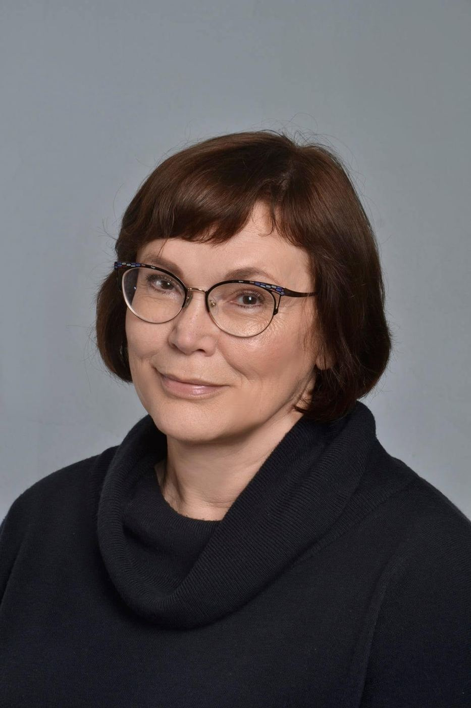
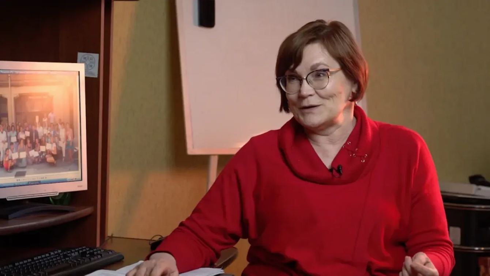

Ольга ШныроваOlga Shnyrova
Историк, исследовательница суфражизма и женского движения, основательница и директорка Ивановского Центра Гендерных Исследований. Учительница для сотен людей в разных странах.Historian of suffragism and the women's movement, founder and director of the Ivanovo Center for Gender Studies. A teacher to hundreds of people in many countries.
Non omnis moriar«Я не умру весь». Гораций. Эпиграф к тексту Натальи Гафизовой“I shall not wholly die.” Horace. Epigraph to Natalia Gafizova's text

ЖизньLife
От Иванова до Понте-де-Лимы: университет, центр, книги, школы и люди, которых она собирала вместе.From Ivanovo to Ponte de Lima: the university, the Center, the books, the schools and the people she brought together.
Учитель, который учит видеть историю в людяхA teacher who taught us to see history in people
Фотографии. Листайте вбок, нажмите, чтобы увеличитьPhotographs. Scroll sideways, tap to enlarge
Карта школ и встречSchools and meetings
Карта построена на основе биографии и воспоминаний коллег. Нажмите на точку или название, чтобы узнать, что там происходило.Built from the biography and colleagues' memories. Tap a point or a name to see what happened there.
За пределами карты: Нортгемптон, США (Смит-колледж, 2004) и Хэмлайн, США (конференция проекта Aftermaths of War).Beyond the map: Northampton, USA (Smith College, 2004) and Hamline, USA (an Aftermaths of War conference).
ВоспоминанияMemories
Коллеги, ученицы, соратницы и друзья из разных стран.Colleagues, students, allies and friends from many countries.
ТрудыWorks
Книги, статьи, переводы, интервью и лекции. Полный список с поиском и фильтрами на отдельной странице.Books, articles, translations, interviews and lectures. The full searchable list is on its own page.
Учитель, который учит видеть историю в людяхA teacher who taught us to see history in people
ВоспоминанияMemories
Коллеги, ученицы, соратницы и друзья из разных стран. Каждый текст доступен полностью на русском и английском.Colleagues, students, allies and friends from many countries. Every text is available in full in Russian and English.
ТрудыWorks
Список собран по открытым источникам на 22 сентября 2026 года. Всего у Ольги было более 90 работ, поэтому перечень будет пополняться. Активна ссылка только там, где она ведёт на саму работу.Compiled from open sources as of 22 September 2026. Olga published more than 90 works, so the list will grow. A title is linked only when the link leads to the work itself. Russian titles are given in the original with an English translation in brackets.
Избранные статьиSelected articles
Интервью и лекцииInterviews and lectures
Лекции на Arzamas и интервью 2021–2022 годов о феминизме, гендерных исследованиях и войне.Lectures on Arzamas and interviews from 2021–2022 on feminism, gender studies and war.

О её книге писалиReviews of her book
Где ещё искатьOther sources
ЛекцииLectures
ИнтервьюInterviews
Другие разделыMore